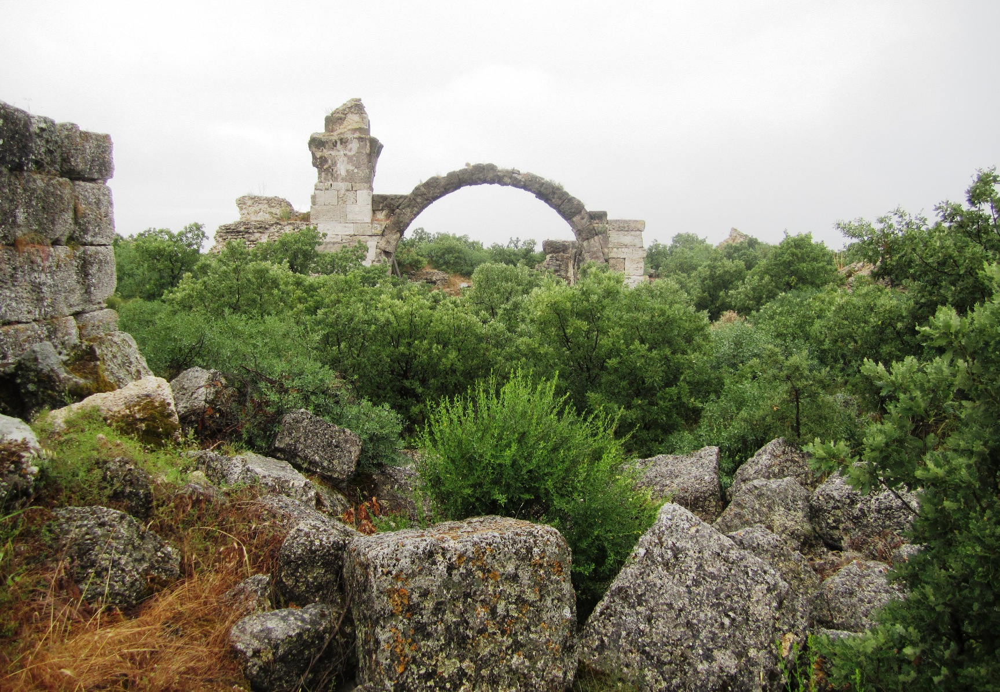

Alexandria Troas

- Find Name
- Alexandria Troas
- Description
- The port city of the Troad, called simply Troas in Acts, sprawling over some 400 hectares with baths, an odeon, a theatre, a gymnasium, and a circuit of walls some ten kilometres long. From Troas Paul sailed for Europe after the Macedonian vision of Acts 16:9-11, and there on his return journey he preached until midnight in an upper room, Eutychus fell asleep, dropped three stories, and was taken up dead — until Paul embraced him and said his life was in him. Paul later asked Timothy to bring the cloak, books, and parchments he had left at Troas.
- Historical Period
- Roman
- Evidence Class
- Contextual
- Interpretations
- The site's identification is certain and its scale matches a major port, but no building at Troas is identified with the upper room of Acts 20:7-12; the odeon and theatre are civic remains, not the meeting place. The entry claims the city, not a room.
- Alternative Names
- Troas; Alexandria of the Troad
- Related Places
- Related Books
- Related People
- Scripture Illuminated
- Biblical Significance
- Troas is the hinge of Acts: the place where the gospel turns from Asia to Europe. The Macedonian call, the first European converts at Philippi, and the breaking of bread at Troas with Eutychus's restoration all belong to this port. Its ruins — a harbour city built for traffic between continents — make the hinge visible.
- Artifact Date
- Hellenistic foundation, Roman colony from Augustus; baths endowed AD 135
- Current Location
- In situ, Alexandria Troas archaeological site
- Discovery Location
- Near Dalyan, Canakkale Province, Turkey
- Timeline Era
- Early Church
Awaiting Review Not yet checked against scholarly sources. Treat its claims as provisional until this entry is reviewed. About verification
Last reviewed: not yet reviewed